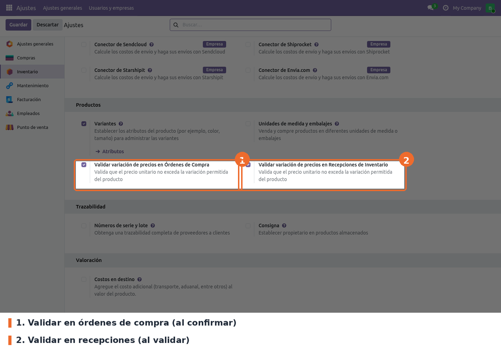
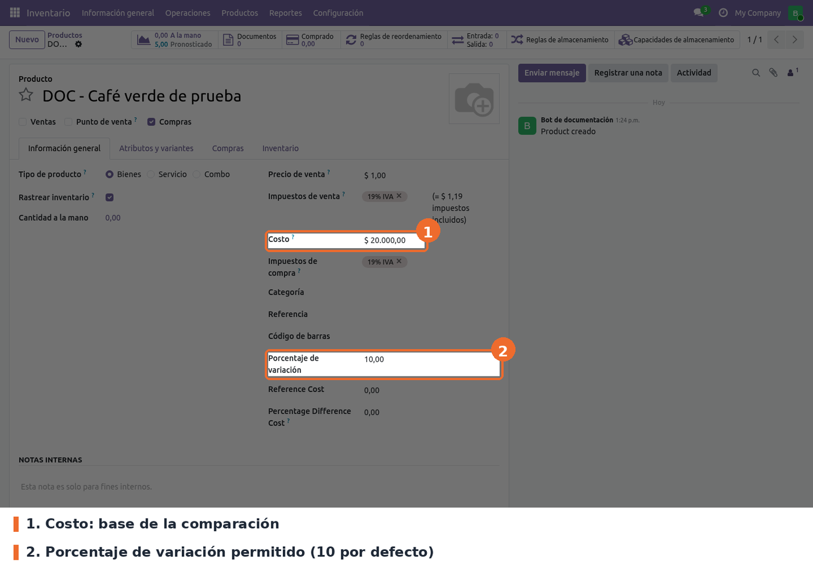
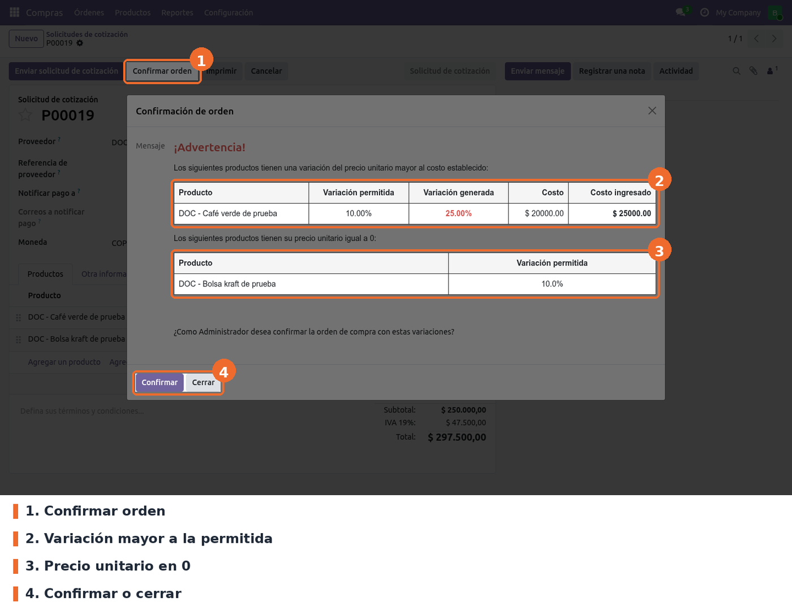
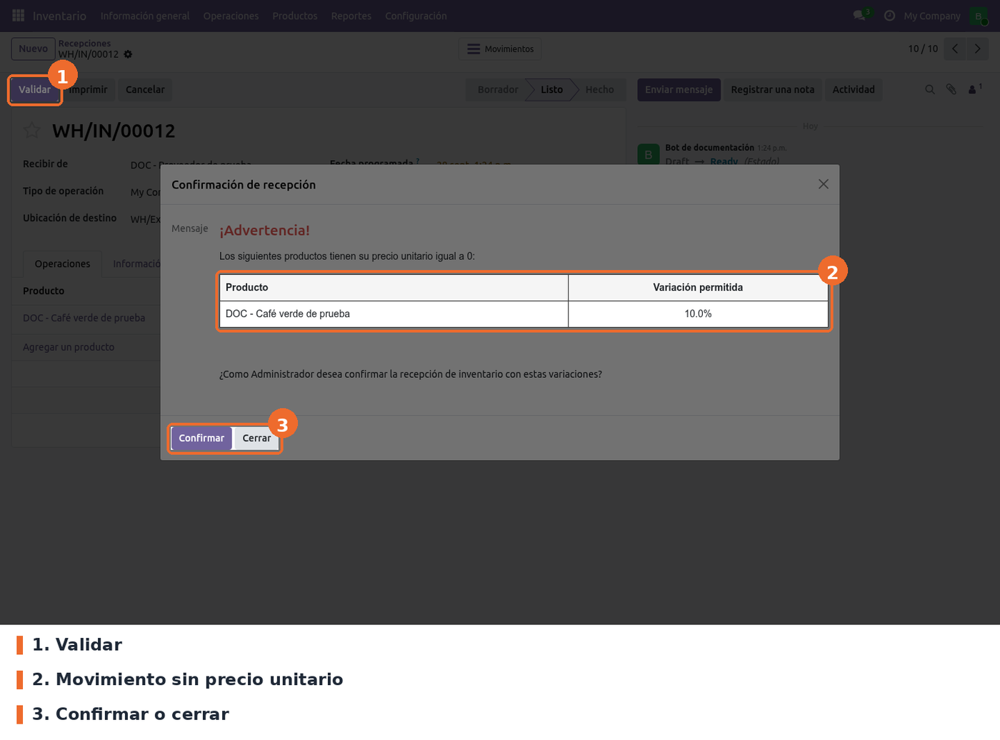

Controla el precio unitario con el que se compra y se recibe mercancía. Antes de confirmar una orden de compra o de validar una recepción, compara el precio de cada producto con su costo y detiene el proceso si encuentra alguno de estos casos:
Cuando eso pasa, se abre un asistente con una tabla de los productos afectados: variación permitida, variación generada, costo y costo ingresado. Un administrador de inventario puede confirmar igual; cualquier otro usuario solo puede cerrar el aviso y pedir la aprobación.
Existe para que un precio mal digitado, o una línea sin precio, no llegue al costo del inventario sin que nadie lo revise.
purchase, product y stock, todos de Odoo Community. No hay dependencias externas ni
librerías de Python adicionales.Instalar el módulo desde Aplicaciones. Agrega el campo Porcentaje de variación al producto, dos opciones en los ajustes de Inventario y los dos asistentes de aviso. Las dos validaciones quedan activas desde la instalación.
No hay script de datos: el campo del producto (porcent_variation) y los parámetros de
configuración conservan el mismo nombre técnico que en 17, así que los porcentajes ya cargados y
el estado de las opciones se mantienen.
Cambios de código en la migración:
type == 'product' a type == 'consu', porque Odoo 19 eliminó el
tipo Almacenable. Esto amplía el alcance (ver Limitaciones conocidas).move_ids en lugar de move_ids_without_package, que ya no existe en 19.Ir a Inventario › Configuración › Ajustes y bajar hasta el bloque Productos. Allí están las dos opciones del módulo.

Inventario › Configuración › Ajustes › Productos: las dos opciones de validación
purchase_price_validation.enable_purchase_validation). Opcional; activada por defecto. Revisa
los precios al confirmar la orden y al guardar cambios en sus líneas.purchase_price_validation.enable_stock_validation). Opcional; activada por defecto. Revisa los
precios al validar operaciones de tipo Recepción.Las opciones son globales para la base de datos, no por compañía ni por almacén.
Desmarcar la casilla no desactiva la validación. Al guardar desmarcada, Odoo borra el parámetro, y tanto el módulo como la pantalla de ajustes interpretan un parámetro ausente como "activado": la casilla vuelve a aparecer marcada. Para desactivarla de verdad, ver Solución de problemas.
En la ficha del producto (Inventario › Productos › Productos), pestaña Información general, el campo Porcentaje de variación define cuánto puede alejarse el precio unitario del Costo antes de disparar el aviso.

Ficha del producto: Costo y Porcentaje de variación
porcent_variation de product.template). Opcional; vale
10 por defecto. Se escribe como número (10 = 10 %); en 0, cualquier diferencia con el costo
dispara el aviso. La comparación es en ambos
sentidos: un precio 10 % por encima o por debajo del costo cuenta igual.Los campos Reference Cost y Percentage Difference Cost que aparecen debajo son del módulo
telegram_alerts, no de este.
stock.group_stock_manager): ve el aviso y puede
confirmar la orden o la recepción con las diferencias.Crear la solicitud de cotización como siempre y pulsar Confirmar orden. Si todos los productos están dentro de su porcentaje, la orden se confirma sin aviso. Si alguno se sale, o tiene precio 0, se abre el asistente Confirmación de orden con una tabla por cada caso.

Compras: asistente de confirmación con una variación del 25 % y un producto en 0
La variación se calcula como la diferencia entre el precio unitario y el costo, dividida por el costo. En el ejemplo, el costo es 20.000 y el precio 25.000: la variación es del 25 %, por encima del 10 % permitido.
Un usuario que no es administrador de inventario recibe en su lugar el asistente Advertencia orden con variación de costos, con la misma tabla y solo el botón Cerrar.
Además, para esos usuarios, guardar cambios en las líneas de una orden ya creada también se bloquea si alguna línea queda fuera de rango o en 0: Odoo muestra un error que termina en "Comuniquese con el Administrador" y el cambio no se guarda.
En Inventario › Operaciones › Recepciones, abrir la recepción y pulsar Validar. Si algún movimiento se sale del rango o no tiene precio, aparece el asistente Confirmación de recepción (o Advertencia recepción con variación de costos para quien no es administrador), con los mismos botones. Al confirmar, la validación sigue su curso normal, incluidos los avisos estándar de Odoo como el de entrega parcial.

Inventario: asistente de confirmación en una recepción manual sin precio
El precio que se revisa es el precio unitario del movimiento de inventario. En una recepción que viene de una orden de compra, Odoo lo toma de la línea de la orden (ya convertido a la moneda de la compañía y a la unidad del producto). Una recepción creada a mano no tiene precio, así que todos sus productos salen en la tabla de precio unitario igual a 0, como en la captura.
purchase_price_validation.enable_purchase_validation (compras) o
purchase_price_validation.enable_stock_validation (recepciones) y cambiar el valor a False.
Con ese valor la casilla de Ajustes también aparece desmarcada. Para volver a activarla, poner
True.default=True y el módulo lee
el parámetro con valor por defecto 'True'; al desmarcar, Odoo borra el parámetro y ambos lo
vuelven a leer como activo. Solo se desactiva escribiendo False en el parámetro (ver Uso ›
Solución de problemas).type == 'consu', que incluye también los Bienes sin Rastrear inventario
(antes Consumibles). La equivalencia exacta sería filtrar por is_storable.price_unit de la línea contra
standard_price sin convertir moneda ni unidad (ver Uso › Solución de problemas). La recepción
sí usa el precio ya convertido.button_confirm y button_validate usan self.id y
self.picking_type_id.code; con varios registros y diferencias falla con error de Odoo.write de la orden bloquea a los usuarios sin
stock.group_stock_manager incluso con la orden en borrador. La creación no se revisa.validate_analytic=True en el contexto, y con eso se exigen los planes analíticos obligatorios.
Al confirmar desde el asistente ese contexto no llega, así que la orden se confirma sin esa
revisión.security/ir.model.access.csv da lectura y creación de
purchase.order a todos los usuarios internos (base.group_user). Odoo solo da lectura a
Inventario y Contabilidad, y creación a Compras. Viene así desde 17.$ 20000.00) y el porcentaje de la tabla de precio 0 sale con un decimal.
Las dos opciones de Ajustes comparten el mismo texto de ayuda.sanitize=False.static/description/icon.png mide 750x750 px, no los 100x100 de los módulos del core.models/product_template.py: el campo porcent_variation (Porcentaje de variación).models/res_config_settings.py y views/res_config_settings_views.xml: las dos opciones, en el
bloque Productos de los ajustes de Inventario, guardadas como ir.config_parameter.models/purchase_order.py: extiende write (bloqueo al guardar líneas) y button_confirm
(asistente); _continue_confirmation retoma la confirmación estándar.models/stock_picking.py: extiende button_validate solo para operaciones incoming.models/confirmation_variation_wizard.py y models/warning_variation_wizard.py, con sus vistas:
los dos asistentes (con y sin botón Confirmar).views/product_template_views.xml: el campo en la ficha, dentro del grupo del costo.views/purchase_order_views.xml: herencia vacía, sin efecto.get_list_products_variation y _generate_variation_message están duplicados en
purchase.order y stock.picking. Un cambio en la regla hay que hacerlo en los dos.write, purchase.order.button_confirm,
stock.picking.button_validate) existen en Odoo 19 con la misma firma._continue_confirmation de la orden escribe en el log con nivel error en un flujo normal.